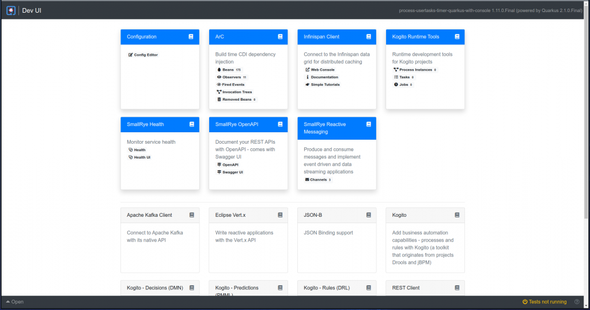
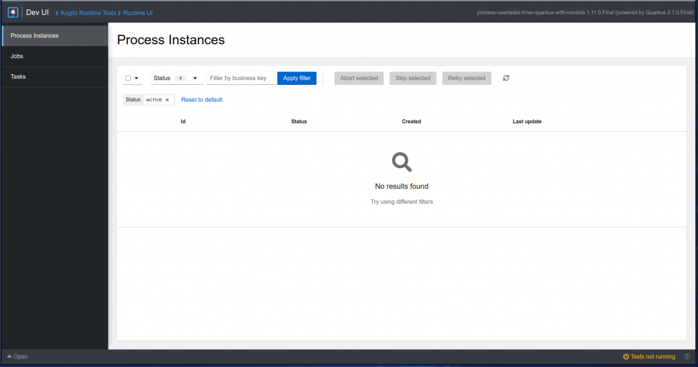
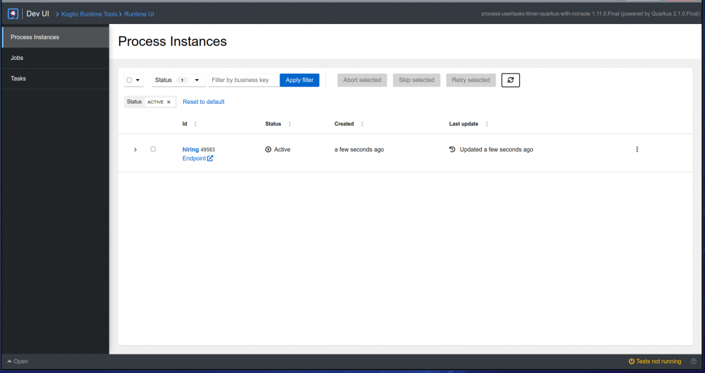
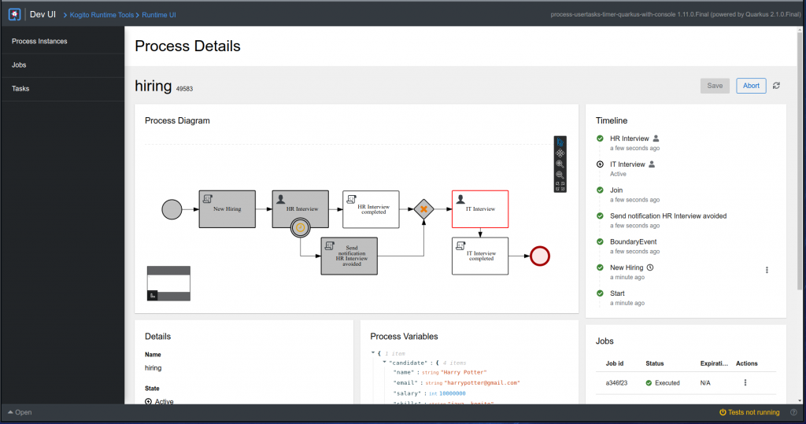
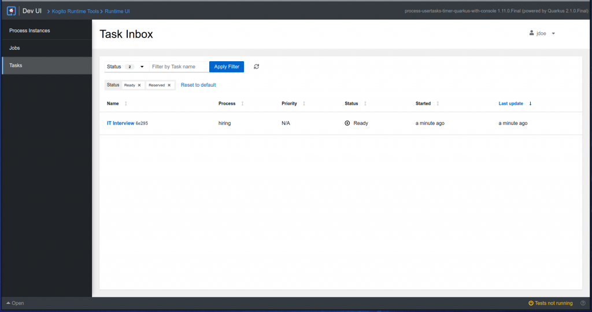
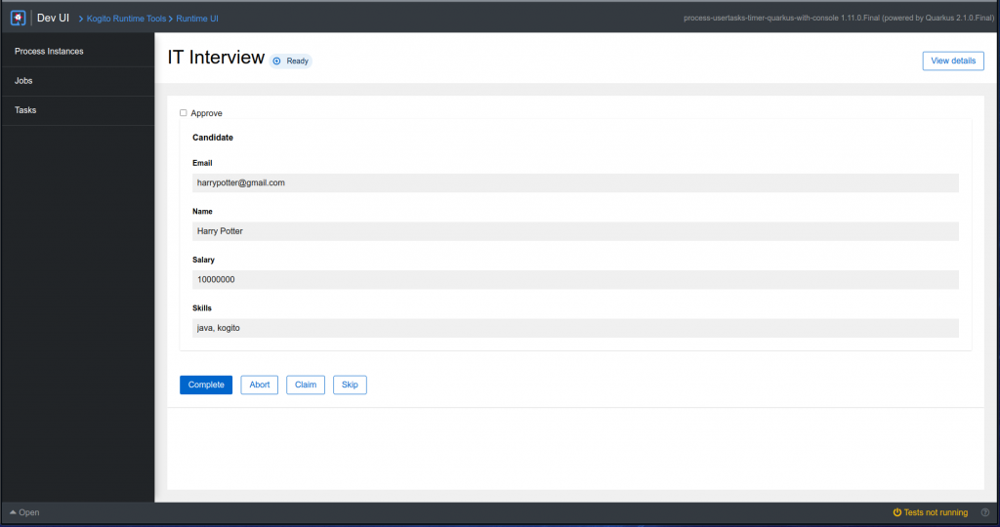

Developing business processes more efficiently with Runtime Tools Quarkus extension – Part 1
This the first of a series of posts presenting our new Runtime Tools Quarkus extension, which brings the main features of both Management and Task consoles to the development environment in a much easier way to set up.
History
In the past, to use features like process instances list, jobs management and task inbox locally, it was necessary to set up both Management and Task consoles. This requires a full environment filled with external services, similar to what you would need in production.
In the first release of this extension, it still requires some services, but we are removing the need for them step by step, until the extension is able to run without depending on them.
Installation
To install the extension, you just need to add it as a dependency of your project:
<dependency>
<groupId>org.kie.kogito</groupId>
<artifactId>runtime-tools-quarkus-extension</artifactId>
<version>1.11.0.Final</version>
</dependency>And also add some properties to your project src/main/resources/application.properties file:
# Data-index service URL
org.kie.kogito.runtime.tools.quarkus.extension.runtime.dataindex.DataIndexClient/mp-rest/url=http://localhost:8180
# Mocked users and groups for the task inbox screen
quarkus.kogito-runtime-tools.users=jdoe,admin,user
quarkus.kogito-runtime-tools.users.jdoe.groups=admin
quarkus.kogito-runtime-tools.users.admin.groups=admin
quarkus.kogito-runtime-tools.users.user.groups=userAs mentioned before, this release still needs a few external services to function properly: Data-index, Jobs service and Kafka.
Execution
To try the extension out, we will use the process-usertasks-timer-quarkus-with-console in the kogito-examples repository. There you can also find a comprehensive README on how to run the example and run a process.
The following steps will run all external services needed and also the consoles, if you want to try them out as well:
- Clone repository
git clone https://github.com/kiegroup/kogito-examples- Build the example
cd process-usertasks-timer-quarkus-with-console
mvn clean install -DskipTests- Run Docker images
cd docker-compose
./startServices.sh- Start runtimes
cd process-usertasks-timer-quarkus-with-console
mvn clean compile quarkus:devOnce this is executed, you can access the Quarkus Dev UI in the browser: http://localhost:8080/q/dev/
Walk-through
Once you open de Quarkus Dev UI, you will see something like this:

At the top-right corner, you can see the card of our extension, Kogito Runtime Tools. There you can check the counts for process instances, tasks and jobs, and also enter the extension by clicking in one of them:

Now let’s start a new process instance by making the following request:
curl -H "Content-Type: application/json" -H "Accept: application/json" -X POST http://localhost:8080/hiring -d @- << EOF
{
"candidate": {
"name": "Harry Potter",
"email": "harrypotter@example.com",
"salary": 30000,
"skills": "Java, Kogito"
}
}
EOFNow if we refresh the list we can see our new process instance:

And if we click in the instance, we can see its details:

As you can see in the diagram in the process details, this instance is currently waiting for the IT Interview user task to be completed. If we go to the tasks list using the left menu, we can see it:

And when we click in its name, we can complete the task:

Once the user task is completed, the process instance will finish, and you can verify that by going back to the process instance details screen.
Next steps
In the next releases, we are planning to add new features and capabilities that will improve the extension experience. Here are some of them:
- Embedded in-memory data-index
One of our goals is to remove all the need for external services when using the extension. The first of those will be the data-index.
- Process list and start
As you saw during the walk-through, a manual request was made to start a new process instance, because currently it is not possible to start them using the UI. We plan to add a process list screen, where it will be possible to see the processes available at runtime and start them, passing the needed information.
- Custom task forms
In our current distributions, user tasks forms are automatically generated based on its schema. With this feature, we plan to allow developers to make custom forms using React or HTML and use them instead of the generated ones.
Stay tuned, this is the first part of a series of posts that we will be making along with new releases of the extension. We hope these new features will help make the development of business processes easier and more powerful.